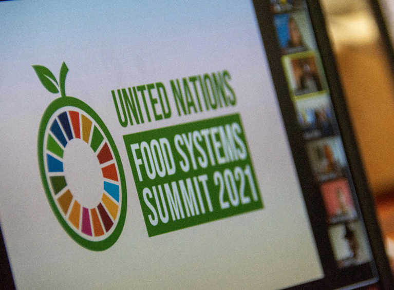

Culmina la Pre Cumbre sobre los Sistemas Alimentarios
28 de julio de 2021
Luego de tres días de extensa actividad que inició el lunes 26 de julio, hoy miércoles 28 de julio concluyó la Pre-Cumbre de las Naciones Unidas (ONU) sobre los Sistemas Alimentarios desarrollada en la sede de la Organización de las Naciones para la Alimentación y la Agricultura (FAO por sus siglas en inglés), en Roma, Italia.
Declaración del Estado Plurinacional de Bolivia en la Pre-Cumbre de las Naciones Unidas sobre los Sistemas Alimentarios
27 de julio de 2021
El Viceministro de Relaciones Exteriores, Freddy Mamani, brindó este martes 27 de julio la Declaración del Estado Plurinacional de Bolivia ante la Pre-Cumbre de las Naciones Unidas (ONU) sobre los Sistemas Alimentarios que se desarrolla en la sede de la Organización de las Naciones para la Alimentación y la Agricultura (FAO por sus siglas en inglés), en Roma, Italia.
Inicia la Pre-Cumbre de las Naciones Unidas sobre los Sistemas Alimentarioss
26 de julio de 2021
El Estado Plurinacional de Bolivia, a través del Viceministro de Relaciones Exteriores, Freddy Mamani y el representante de Bolivia ante las ONU, Emb. Diego Pary, participa de este evento, en el que presentarán la posición país y la hoja de ruta nacional estratégica; documentos que fueron elaborados gracias a la participación de diversos representantes y actores sociales de todo el país relacionados con los sistemas alimentarios, dentro de los Diálogos Nacionales realizados.
Sesión de conexión con los convocantes de los Diálogos rumbo a la Cumbre sobre los Sistemas Alimentarios
26 de julio de 2021
Mediante conexión virtual, el Viceministro de Relaciones Exteriores, Freddy Mamani, participó el jueves 22 de julio de la Sesión de Conexión con los Convocantes de los Diálogos de los Estados Miembros rumbo a la Cumbre de las Naciones Unidas sobre los Sistemas Alimentarios.
Países latinoamericanos defenderán producción pecuaria ante ONU
20 de julio de 2021
Países de Latinoamérica y el Caribe, en especial los grandes productores de alimentos del cono sur sudamericano, anunciaron este lunes que unirán sus voces en un encuentro sobre Sistemas Alimentarios de la ONU este mes para defender su producción pecuaria.

El Gran Diálogo Nacional concluyó con la Propuesta País y Declaración Política rumbo a la Cumbre sobre los Sistemas Alimentarios
18 de julio de 2021
El pasado jueves 15 de julio el Gobierno del Estado Plurinacional de Bolivia, concluyó con la fase de los Diálogos sectoriales y territoriales con miras a la Cumbre sobre los Sistemas Alimentarios con un Gran Diálogo Nacional de Bolivia, que tuvo lugar los días 14 y 15 de julio de 2021, con la participación de más de 200 representaciones de organizaciones sociales, pueblos indígenas originarios campesinos, académicos, investigaciones, autoridades, productores y del sector privado donde se resaltó el rol fundamental del Sistema de Producción Alimentario basado en la Agricultura Tradicional.
Con una propuesta ampliamente consensuada y una declaración política, Bolivia avanza hacia la Cumbre sobre Sistemas Alimentarios
15 de julio de 2021
Bolivia cierra el Diálogo Nacional rumbo a la Cumbre sobre Sistemas Alimentarios con una propuesta consensuada y una declaración política, ambos documentos construidos en diálogos sectoriales y territoriales realizados desde mayo.
Diálogos Nacionales rumbo a la Cumbre sobre los Sistemas Alimentarios
14 de julio de 2021
En el marco de los Diálogos Nacionales del Estado Plurinacional de Bolivia, el día de hoy, miércoles 14 de julio, se celebró la primera sesión del “Gran Diálogo Nacional rumbo a la Cumbre Sobre los Sistemas Alimentarios” que continuará el día de mañana jueves 15 de julio con la participación de autoridades nacionales e internacionales y que será el cierre de este proceso en el país.
Bolivia completa los diálogos territoriales con la participación de las naciones y pueblos indígenas
1 de julio de 2021
Con la participación de representantes de las naciones y pueblos indígenas, Bolivia completó los diálogos territoriales rumbo a la Cumbre sobre Sistemas Alimentarios y se prepara para el gran Diálogo Nacional, a desarrollarse los próximos 8 y 9 de julio.
Reunión con representantes de naciones y pueblos indígenas de Bolivia rumbo a la Cumbre de Sistemas Alimentarios
1 de julio de 2021
Este jueves 1 de julio, se celebró el “Diálogo de Naciones y Pueblos Indígenas de Bolivia” en el marco de los Diálogos Nacionales del Estado Plurinacional de Bolivia. El mismo, contó con la participación del Vicecanciller de Bolivia, Freddy Mamani.
Transformación de los sistemas agroalimentarios andinos
1 de julio de 2021
En un contexto en el que el cambio climático amenaza la sostenibilidad de los recursos naturales y donde, paralelamente, se prevé que la demanda de alimentos aumentará en un 50% hacia el 2030 ¿Cómo aseguramos que la agricultura andina siga siendo eficiente, pero que mejore sus indicadores de inclusión social y sostenibilidad ambiental?
Academia aporta visiones a la construcción de la propuesta boliviana rumbo a la Cumbre sobre Sistemas Alimentarios
29 de junio de 2021
Bolivia reunió a representantes de la academia, universidades e institutos de investigación para enriquecer con su visión la propuesta nacional rumbo a la Cumbre sobre Sistemas Alimentarios, a realizarse el mes de septiembre.
Diálogos con instituciones educativas rumbo a la Cumbre sobre Sistemas Alimentarios
29 de junio de 2021
Hoy martes 29 de junio, se celebró el “Diálogo Nacional: Academia e Institutos de Investigación rumbo a la Cumbre Sobre los Sistemas Alimentarios” actividad enmarcada en los Diálogos Nacionales del Estado Plurinacional de Bolivia que contó con la presencia de universidades e instituciones educativas públicas y privadas de todo el país.
Diálogo sectorial sugiere valorar e impulsar el Sistema Alimentario Tradicional
29 de junio de 2021
El pasado lunes 28 de junio de 2021, el Viceministro de Relaciones Exteriores, Freddy Mamani Machaca, en su calidad de Autoridad Convocante de la Cumbre sobre Sistemas Alimentarias, en coordinación con los representantes del Ministerio de Medio Ambiente y Aguas y del Ministerio de Desarrollo Productivo y Economía Plural, con el apoyo del Sistema de Naciones Unidas y el FILAC, permitió la evaluación del proceso de diálogo y la construcción de propuestas, resaltando los diálogos regionales con organizaciones sociales, expertos, académicos y la sociedad civil, para la construcción de la posición país en la Cumbre sobre los Sistemas Alimentarios convocada por el Secretario General de Naciones Unidas, que se llevará a cabo en septiembre de este año, la cual tiene por objetivo lograr sistemas alimentarios más saludables, sostenibles y equitativos, como parte de la Década de Acción para alcanzar los Objetivos de Desarrollo Sostenible (ODS) al 2030.
Bolivia completa los diálogos territoriales con la participación de las naciones y pueblos indígenas
1 de julio de 2021
Con la participación de representantes de las naciones y pueblos indígenas, Bolivia completó los diálogos territoriales rumbo a la Cumbre sobre Sistemas Alimentarios y se prepara para el gran Diálogo Nacional, a desarrollarse los próximos 8 y 9 de julio.
Reunión con representantes de naciones y pueblos indígenas de Bolivia rumbo a la Cumbre de Sistemas Alimentarios
1 de julio de 2021
Este jueves 1 de julio, se celebró el “Diálogo de Naciones y Pueblos Indígenas de Bolivia” en el marco de los Diálogos Nacionales del Estado Plurinacional de Bolivia. El mismo, contó con la participación del Vicecanciller de Bolivia, Freddy Mamani.
Portal Web informativo sobre el proceso del Estado Plurinacional de Bolivia rumbo a la Cumbre de las Naciones Unidas sobre los Sistemas Alimentarios 2021.
Sitio desarrollado por el Ministerio de Relaciones Exteriores de Bolivia y el Sistema de las Naciones Unidas en Bolivia. Todos los derechos reservados.